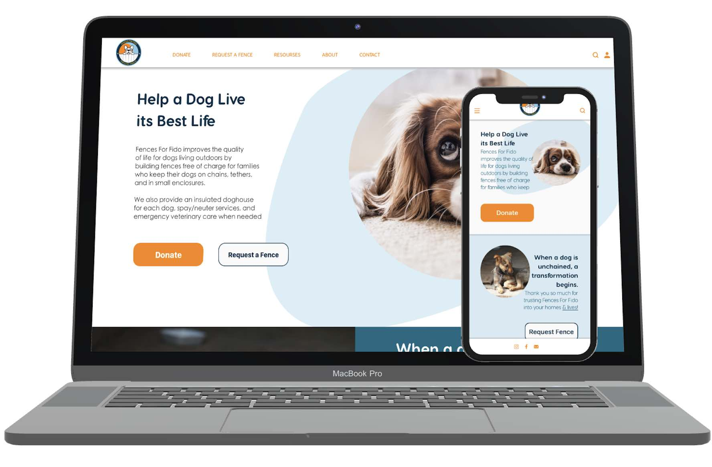
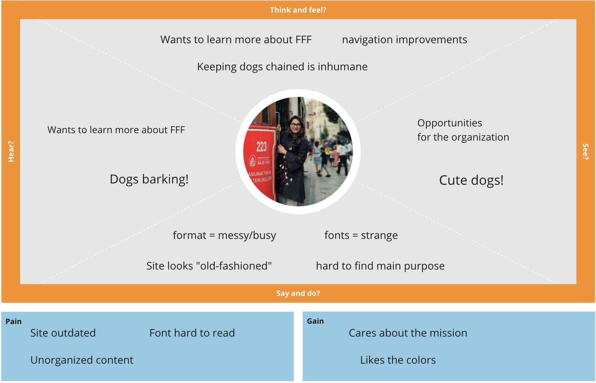
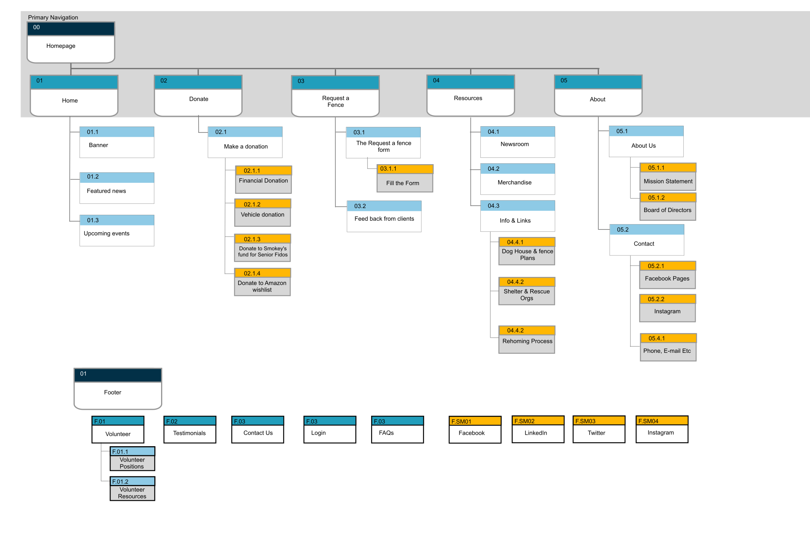

Problem: The Fences for Fido’s website is outdated and lacks a clear, cohesive mission.
Solution: To redesign the website and a navigation in a minimalistic and modern way to help users in completing essential tasks, e.g. making donation and fence request.
Tools: Miro | Figma | Adobe Illustrator | Google Workspace
My Responsibilities: User Research Plan, Problem Statement, User Statement, Value Proposition Statement, Competitor Analysis, Flow Chart Lo-Fi - Hi-Fi prototyping and Testing
Timeline: 3 weeks - group project